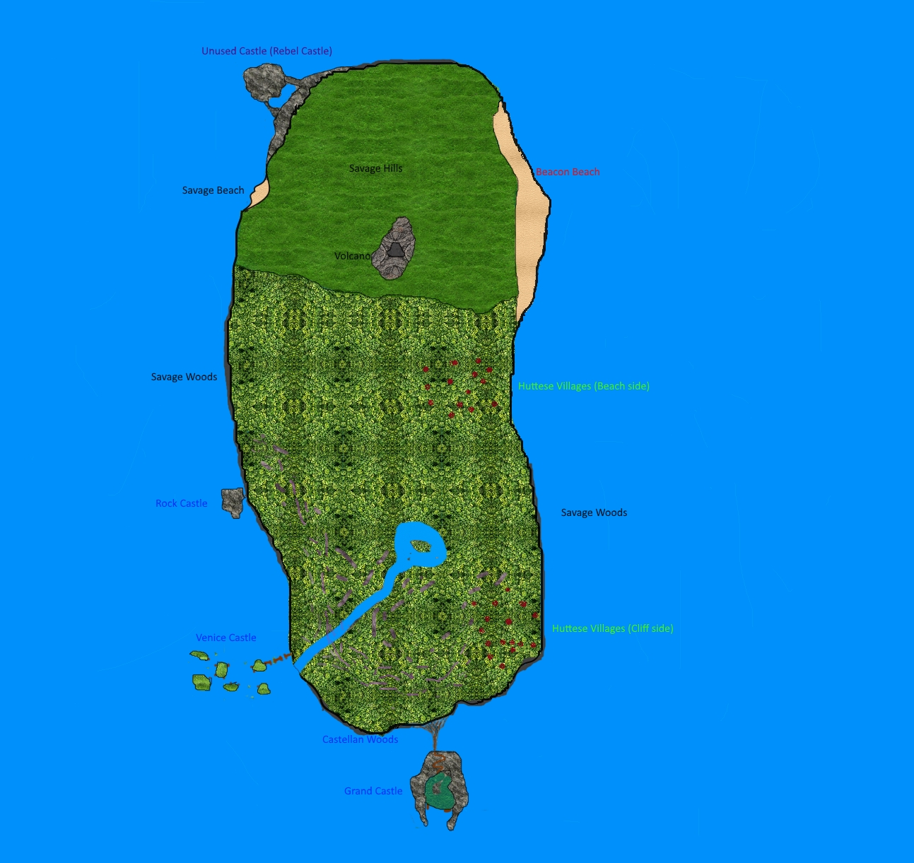

Storyline of Castaway Wars
Summary
A mayor number of people stranded on the island. After attempts to build a stable community failed due to serious differences of ideas for island and community policies, the group split up into several fractions, which are mostly hostile towards each other.
Timeline
YC means Years in the Castaway's timeline. 0-1-1 YC was the day when the first people arrived on the island. BYC is before this. Since none of the first castaways knew how much time had passed, they built their own calendar. This was then adopted by all castaways who arrived later, because most of them didn't know the exact date either.
early phase: 0YC until 20 YC
- 0-0-some days BYC: beginning of the stormy phase
- 0-0-one or two days BYC: 4:00 am: A ship sinks in the storm near the island.
- 0-0-one or two days BYC: afternoon: people from that ship make it to beacon beach and immediately fall asleep, terribly exhausted.
- 0-1-1 YC: 7:30 am: first person wakes up. No idea how much time has passed. Person starts waking up the others.
- 0-1-1 YC: 9:40 am: everyone present woken up. Mostly healthy. Attempts to gather status informations.
- 0-1-1 YC: 10:13 am: Status information gathered:
- no advanced equipment, only steel knives
- drinkable water available
- fruit, rabbits and birds available for food
- no sign of dangerous animals
- no sign of any kind of human presence
- no short or mid-term ways of escaping this place (probably an island)
- 0-1-2 YC: set up of first signal fire
- 0-1-3 YC: start hunting wild pigs in the near part of the vast forest
- 0-1-6 YC: start of political disagreements: just wait to be saved, build homes, or live nomadic and have fun
- 0-1-10 YC: nomad lovers split away, however, not many women join them
- 0-1-11 YC: nomads split up into two fractions due to cultural disagreements, party with higher culture refered to as wood runners, party with lower culture called barbarians. Almost all nomad women join the wood runners
- 0-1-12 YC: barbarians split up into two tribes due to leadership disagreements
- 0-1-14 YC: home lovers split away into the forest, become beach-side-huttese
- 0-1-16 YC: a barbarian tribe attacks beacon beach in order to capture women. The barbarians are from now on considered and called savages
- 0-1-17 YC: beacon guards' scouts start searching a safer place for the children
- 0-2-13 YC: beacon guards' scouts find Grand castle
- 0-2-16 YC: beacon guards children and their parents move to Grand castle. However, most adult beacon guards, which are not parents, stay at beacon beach, because still a considerable number of people strand there every week and the beacon guards don't want those people to be recruited by savages.
- 0-3-9 YC: end of stormy phase. Although fewer people now strand at beacon beach, the beacon guards still remain there hoping that signal fires could be more easily seen if they were at varios places on the island, not only at grand castle.
- 0-4-4 YC: unsatisfied by the current living standards of huttese, some of them split away to settle elsewhere. They build a fort on a hill and become known as fortese.
- 0-12-25 YC: beginning of a new stormy phase
- 1-1-12 YC: since a large number of castaways stranded at beacon beach during the last few days, beacon guards send couriers to grand castle in order to call for troops to escort the newly arrived families to security in grand castle.
- 1-3-7 YC: end of new stormy phase. Stormy phases now thought to occur regularly every year. This is actually true and due to the season.
- 3-3-12 YC: Venice castle claimed by castellans
- 4-11-13 YC: castellan scouts find first cliff-side-huttese village, they are accepted there, because they help defending the castellan woods from savages
- 7-6-12 YC: Rock castle claimed by castellans
- 18-1-1 YC: Council of castellans decides that every castle specializes in at least one special topic: Rock castle: martial arts and guns, Venice castle: ships, Grand castle: animal taming and various advanced technologies
middle phase: 20YC until 400 YC
- 44-7-12 YC: castellans successfully recruit martial arts grandmaster. He suggests attempts to produce metal.
- 44-11-24 YC: first small amount of metal extracted from ore, but quality is far too poor and quantity not mentionable.
- 53-6-17 YC: "the savage strike force" attacks a castellan strike force. See "important events" section.
- 66-6-6 YC: castellans build a small outpost as island settlement
- 72-2-8 YC: a newly stranded castaway mentiones that many ships have been lost on the routes that presumably pass the region within the last one hundred years, and that she isn't surprised to see a civilisation has evolved from the castaways that is waiting to be saved
- 86-3-4 YC: first group of latecomers arrives
- 100-1-1 YC: "First Century Jubilee" is celebrated. See "important events" section.
- 103-4-14 YC: Huttese attack the small castellan outpost on the island and claim it for themselves, claiming that the castellans didn't fully use this place. The huttese island settlement becomes stronger, to a point where some fortese think that it has become a fort. Therefore, the forteses too start to claim that the island settlement rightfully belongs to them. Latecomers who think it to be a nice spot won't make the whole situation better over the years.
- 145-7-3 YC: A newly stranded castaway stubbornly refuses to accept the castaway timeline. He insists that there must be someone somewhere who knew and noted the date of their arrival, and he wants the island to use the timeline of the outer world. But because he too lost the memory of the date, there is nothing he can do about it, and in the end, he too has to accept the castaway timeline.
- 208-5-6 YC: "Battle of the Burned Hills" starts, ends two days later. See "important events" section.
- 208-12-21 YC: rampage of the madmen ends with them getting physically ill when the rain and storm season starts
late phase: 400 YC and onwards
- 400-1-1 YC: Fourth Century Jubilee is celebrated. See "important events" section.
- 447-2-19 YC: castellans successfully recruit a real shipbuilder. Although she has no experience building ships with the suboptimal woods available, the ship-development of Venice castle significantly improves.
- 450-3-6 YC: on the last day of the stormy phase in this year, an unusually large group of latecomers strands. They report that they were refugees from a world wide war. They consider the locals to be barbarians due to the seemingly stoneage-leveled technology, and decide to conquer all and bring peace. They are the last group of latecomers that strands, and they will be known as the imperials. Afterwards, the number of new castaways drops significantly.
- 452-1-14 YC: the last reported new castaway strands. Picked up by the beacon guards, he or she reports that the world is at war, and that the culture level of the beacon guards looks better than what is usually seen in the "civilised" world.
- 499-6-4 YC: the "compass expedition" starts in Venice castle. See "important events" section.
- 500-1-1 YC: At the Fifth Century Jubilee, the castellans inform everyone of the distant islands. Thereafter, the "distant islands mode" starts.
- 512-8-6 YC: settlers in the distant islands first encounter the "seals" (a blue savage tribe which made it out to the distant islands)
- 597-6-1 YC: east-end expeditions start. See "important events" section.
- 598-6-6 YC: someone of the east-end expeditions reports to have seen an object in the water that can't have originated from the known castaways
- 599-8-6 YC: east-end expeditions arrive at fiery beach (twin island). Contact with twin island peoples established.
- 600-1-1 YC: Sixth Century Jubilee is celebrated, now with many people attending from boats. Everyone came, even those who moved to the distant islands, even the seals. Information spread that there is another equally huge island ten days away that might be interesting to trade with (twin island appearently put their research focus for the new distant islands resources on different topics than the main island).
- 600-4-16 YC: difference in religion marked between the main island and the twin island
- 600-4-18 YC to 600-10-12 YC: religion conflict escalates, mutual decision is made to declare war
- 600-12-28 YC: scheduled with the beginning of the stormy season as a sign, the twin islands war starts
later: twin islands war, the main island wins due to being used to fight high-tech wars because of the imperials- even later: returners' fate
important events
Some events require a longer description than what would be possible in the timeline. These events are explained here in detail. The events include:
- the savage strike force
- First Century Jubilee
- Battle of the Burned Hills
- Fourth Century Jubilee
- compass expedition
- east-end expeditons
the savage strike force, 53-06-17 YC
"The savage strike force" was a short-term alliance of three savage tribes to attack a group of castellans. Despite the savages not working together very well (still some internal fighting), they were the largest group of cooperating savages ever reported.
the prologue
Nine years ago, the castellans recruited the martial arts grandmaster. Now, a relatively large strikeforce, with every member having ample martial arts training, quits rock castle with the mission to recover knives and guns from the savages. They are a little over-confident in their skills and therefore act a little overaggressively. They think they can already work towards the known long-time-goal of rock castle: wiping out all savages on the island. Therefore, the castellan strike force causes considerable damage to various savage tribes. The savages, of course, are not amused by this, and a large grey tribe (that may have been the union of two or even three grey tribes anyway) decides to try and rally as many unharmed nearby tribes as possible. They get the support of two other tribes (whose colour is still unconfirmed and disputed) and together, the three tribes become a what will be known as "the savage strike force", a strike force with the specified goal to defeat this specific castellan strike force.
the event
The savages attack the castellans sometime during the morning or early afternoon. (The historians couldn't find a consensus on when exactly the battle started, nor could they definitely figure out where the battle took place. Some claim it must have been in the forest, because the survivors remembered frantic fighting between trees, others argue that it must have been on savage beach or a hillside because such a large savage force couldn't have been coordinated between the trees, and the fight memories with trees originated from some fights while retreating.) The castellans don't immediately realise how large the attacking force really is, and decide to fight back. Despite the savages theoretically working together, there is a lot of distrust between the members of the tribes, and, as a result, they sometimes fight each other and not the castellans, but still most fight the castellans. When castellan castualties start to rise, and still more and more savages pour into the fight, the castellans suddenly realise that they can probably not win this battle. They decide to retreat. The savages immediately start to pursue the retreating castellans, and do not cease this pursue until the castellans retreat into rock castle. However, with the start of the pursuit, the trust between the tribes ceases definitely, and the two smaller tribes leave the alliance and the grey tribe continues alone.
the aftermath
The castellan strike force lost 3/4 of their members, including the commander. The savages too, had high losses, since the castellans DID have a large and powerful strike force. Everyone on the island was surprised that the savages could form a large group like this. The savages could have declared the whole operation to have been a success, but regarding the high losses and the lack of trust inside the alliance, the grey tribe decided to not proclaim a great victory. On the castellan side, nobody wanted to declare a victory, although the lieutnant refused to call it a defeat, pointing out that the castellan strike force performed a rather good retreat despite the loss of the commander, once they decided to retreat, also the survivors brought back one loaded gun, plus the savage losses had been a lot higher. Nevertheless, it felt like a defeat to the castellans, and castellan strike forces have become a lot more cautious, and will never again try to fight back when directly attacked by a savage army.
First Century Jubilee, 100-1-1 YC
The "First Century Jubilee" was a giant celebration of the jubilee of exactly one hundret years since the first castaways' arrival. The entire island population was assembled and held peace for a few days, a highly remarkable achievement.
the prologue
In early 99 YC, many people wondered when the the onehunderedth anniversary of the first castaways' arrival would be, and if there would be some kind of celebration. The castellans decided to take the initiative and went to the all-purple-tribe to discuss their plan: Everyone should make peace for a few days around the date 100-1-1, and meet at beacon beach. Everyone should also bring enough food to feed themselves for that time. The all-purple-tribe liked the idea, and took on the responsibility to spread the news across the island. The time of more than six months ensured that the news could be spread to everyone on the island without exception. There was a debate if it would be safe to have so many savages at one point at the same time, but considering there was no black tribe at that time, it was thought that under the careful watch of the all-purple-tribe, it would be safe enough to have the meeting, especially with the host being the beacon guards, well revered as people who hate fighting. The main festivity was set on the first of the year 100, but the invitation was set calling everyone in as soon as the storm season starts. Although a little early, it was deciden to choose this signal for convenience reason, since noone on the island, even those without calendar, could miss this signal. Plus everyone would still need some time to move to beacon beach. The date within the storm season of course ment that the weather would not be ideal for celebrations, but on the other hand, short after the temperature drop people tended to be more calm and less fighting, so this would improve the safety of the whole organisation.
the event
Two days before the new year, actually everyone on the island was present at beacon beach. The castellans had a special guest: An old woman, 106 years old, the last surviving member of the very first group of castaways. She mentioned that when she first woke up, beacon beach looked lonely, with only few people scattered lying around or trying to wake the sleeping within vision range. Now, 100 years later, the beach looked slightly crowded no matter where one looked. It be of note that most people, even most savages, came unarmed (they had hidden their weapons at home) to the festival. On the morning of 100-1-1, at 7:30 am (exactly 100 years after the beginning of the known time), the celebration starts with a speech by the old castellan woman. She tells everyone about what she remembers of the first hours and days on the island, about the many years since, and most importantly, the will to achieve the goals of surviving or living on the island she experienced from the grown-ups when she was young. Everyone listens carefully, and her speech is written down by some of the beacon guards and castellans, and later turned into a song (for easier remembering) by the beacon guards, that will be spread to all fractions. After the speech, the festivity really begins, with music, dance, games and a lot of food that everyone shares. It officially ends with sunrise the next morning, and everyone begins to leave in peace again.
the aftermath
What is left to say? Well... The old castellan woman died short afterwards of old age, and her six-year-old great-granddaughter promised to herselve that she would see the 200-Years-jubilee celebration, if something like this would exist. Indeed, from now on, every onehundred years, there will be a Jubilee where everyone on the island assembles in peace, and every jubilee, there will be a 106-year old castellan woman of this dynasty to tell everyone about the event that lies exactly one hundred years in the past, and everyone will listen carefully, and the speech will not be forgotten. In this war-torn little world, there may not be olympic games to make peace for a short time, but these jubilees will always be celebrated in peace as long as there are people on the island.
Battle of the Burned Hills, 208-5-6 YC early afternoon until 208-5-8 YC morning
The "Battle of the Burned Hills" was the largest and most devastating battle that ever occurred on the island. Not only did hundrets of people die, also the survivors and those who cleaned up the mess afterwards were left heavily traumatized.
the prologue
There are two relatively small, but still notable hills close together in the savage hills near the place where the savage hills meet the savage woods and beacon beach. These hills are now known as the Burned Hills, but back in 208 YC they were nice and grassy. This was the reason why they were thought to be a good place to set up a fortification: The hills are not too large, so they are of lesser interest to the savages, but still large enough to offer a good hill-bonus when fighting. These advantages where seen by one fraction of fortese, who set up their fort on one of the hills already years before the battle, and in late 207 YC by an uncommonly large rebel fraction. This rebel fraction had arisen from people from all castles when a charismatic person came up with some new philosophy that strongly conflicted castellan philosophy. They had to leave the castles if they wanted to live their philosophy. They decided not to go to unused castle because unused castle is just too spooky, and there are theories that their philosophy made the rebels even more superstitious than the average people on the island, although this is unconfirmed. Therefore, the rebels had to find a different good location for their fortification, and they found a suitable location on the second of the two aforementioned two hills, very near a community of fortese that either didn't care about the philosophy or didn't dare to attack the rebels on their own. So in early 208 YC, there where two different forts on these two hills. The fortese organized a large assembly with feast for ambassadors of many other fortese communities in the region and beach-side huttese villages. The fortese wanted to discuss something with the other fortese and huttese that were close enough. Nobody knows for sure what the fortese wanted to discuss, since the assembly couldn't be held as the meeting was interrupted by the battle when everyone was still feasting, and the president and the other organisers who knew died in the battle. It is presumed that the meeting was called because the fortese leaders were worried about the philosophy of the rebels, and wanted to organise a massive assault against the rebels featuring troops from many forts, backed up by huttese. The meeting would then have been called to ask for the support of the others, and maybe to fix an attack date, but not to attack right away (ambassadors were invited, not armies). But this is only a theory, backed by the fact that some surviving fortese were worried about the rebel's philosophy, disputed for the fact that other surviving fortese were not worried at all. Anyhow, for the feast, there would be the requirement of a lot of firewood, so the fortese went to cut a lot of wood a few days before the meeting. They did so in a place a little away from their usual place, since they thought that there, they would be in the lands of a different wood runner clan. In fact, they cut the wood in the border area of their usual wood runner foe and one different clan, with the result that both clans got angry and temporarily joined forces to punish the fortese. Their scheduled attack date was by coincidence the date of the meeting, of which they didn't know. During the previous few months, the castellans had grown increasingly worried about the rebels, and decided that all castles will send out their armies in an unified attempt to defeat the rebels. By coincidence, they too chose the same date for their attack.
the event
The Battle of the Burned Hills starts short after noon, when the wood runners and the castellan army attack their respective forts approximately at the same time. They see each other, but since they have nothing to do with one another's quarrels they simply ignore each other, which is possible due to the attack pathes not crossing each other. Their massive attacks catch the attention of some savage tribes, that think, they could snatch themselves a hill if they attack while the high-tech people are still busy with each other. Therefore, multiple, not cooperating and uncoordinated savage tribes join the battle. It is unsure which tribes exactly were involved, but several colours have been confirmed to have been present: red (no surprise), brown, white, grey, and black (a black survivor would later say their chief wanted to wait in the woods until the battle ends, so they could attack the weakened winners afterwards, but they were found and flushed out by a brown tribe). Some claim to have seen blue somewhere, but historians think that this is unlikely because blue tribes usually don't live near enough there to get involved in the battle. It is more likely that some painted shield was blue. When the night sets, the fighting reduces to almost zero, since most parties group up where they are, and stay there until people can see again. Unfortunately, by midnight the huttese and the fortese who had sent ambassadors to the meeting, get suspicious when their ambassadors don't return. Therefore, they plan an attack at the fort, because they think that the meeting was part of some kind of betrayal. When the sun rises again, fortese and huttese armies are ready to attack, but due to a nasty fog, they can't see what is really goin on, and simply attack the location of the fort, not fully realising how many savages there really are, and that the local fortese were not guilty that the ambassadors didn't return. Sometime during the morning, weather still heavily foggy, more and more savages join the battle thinking it should be mainly over by now. Some of these savages get too far east, and accidently trigger an alert with the beacon guards. The beacon guards start firing at the savages, and also into the battlefield realising there are very dangerous numbers of savages there, not realising that they also hit a considerable number of huttese and fortese. When the fog finally lifts during the afternoon, everyone sees the huge chaos and the misassumptions, and without the need of much more communication, everyone turns against the savages, with the exception of savages, who start mildly coomperating and focusing their attack at non-savages, although the cooperation never gets anywhere near as good as during "the savage strike force". A nearby latecomer group sees the battle in the evening, and they decide to join in to help crush the savages, although they can't do much in the evening anymore. During the night, the fighting calms down once more, because the rangers can't shoot and the closequarter fighters try to defend mainly, knowing that the savages greatly outnumber the others. Next morning however, when the archers, crossbowmen, arbalesters and slingers can fire again, the savages quickly get decimated. It is also noted that many survivors of the battle claim that in the evening, there were more savages than in the following morning, with reports ranging from 20% to 50% of savages having fled through the night. It should be noted that there are savages who reported they had fled the battlefield during the night with their tribes, knowing that it would be difficult to crack the defensive formations of the non-savages at night, and it would be extremely dangerous to remain until day, when the archers start firing again. As a result, the savages are beaten within two hours after sunrise, and the surviving savages flee. The non-savages remain on the battlefield, but not one of them is thinking about victory. They all see the devastation, and know that anyone who has taken part in this battle has lost it.
the aftermath
The casualties were large, for all fractions that were on the island at the time: either the people got killed, or they
remained traumathised afterwards. Most fractions could mostly cure those traumata, but the savages couldn't. The
traumata later led to the first occurrence of massed insanity, leading to a group of mad people, previously savages,
rampaging across the island. This rampage lasted until almost 7 months later, when the dropping temperatures coming
with the rain and storm season made the madmen ill, and at the same time appeased them in their heat. Those still alive
(only a one-digit percentage of the original group) were then captured by castellans who tried to cure them - with
success, altough more than half of the captured died even after capture from diseases and starvation, despite the
castellans struggle to save them. The few survivors later joined various fractions, some rejoining the savage tribes
that they had originally belonged to, others joining the huttese, fortese, wood runners, or even castellans. The
trauma coping of the other fractions was considerably better, they lost noone to permanent insanity, although some
people needed several years to fully recover. In order to facilitate the trauma coping, the peoples who lived near
the location and were involved in the battle moved away, with other peoples, who had not been involved, taking their
places (the involved beach-side huttese switched villages with cliff-siders, the involved fortese switched forts with
fortese near unused castle, and the beacon guards in the south were moved to the north of beacon beach, with the
northeners taking their place).
After the battle, and until today, there was and is a confusion about the technology
level of the hosting fortese: a few wood runners from one of the flanks claimed that their troop had been taken under
unprecise, but very fast arrow fire by a single fortese on a watchtower. This claim was seen as rather strange, because
A) fortese usually use slings, not arrow-shooting weapons due to the wood usage, so they wouldn't likely develop a
fast-firing arrow-shooting weapon, B) the descriptions of
the effects seem to indicate that the weapon used was a lever-repeater-crossbow, but this weapon was developed only
much later by huttese, C) no weapon with the capabilities of fast firing was found when cleaning the battlefield,
D) the few survivors of the hosting fortese didn't know about such a weapon, presumably because they had no clearance
to know about new weapon developments. However, the shooter was standing on a watchtower, and this watchtower was cut
down by the wood runners and the top of the tower fell into the main fireplace, which was still on fire since the
feast. The shooter must have been killed by this, and his weapon probably fell into the fire and was totally burned,
so it could be that those fortese were developing a new weapon, a lever-repeater-crossbow, in secret.
The savages
were victims of another confusion: because the battlefield was already cleaned up and all bodies buried when the purple
tribe's delegation arrived, noone could tell what tribes were still alive, considering the fact that everyone expected
that some tribes had been completely exterminated. The purple tribe needed months of work to really know again for sure
what tribes existed, so the information on the wall was unsure for that time, especially considering the two noted black
tribes, who were expected to be still alive, when they had in fact been almost completely killed in the battle and the
few survivors had joined grey tribes.
The total losses vary between the fractions: The savages lost lots of people,
entiere tribes were annihilated there. The involved wood runner clans, too, suffered severe losses, but neither of
the clans was comletely erased. The beacon guards got away more lightely, they lost relatively few, since they stayed
at the edge of the battlefield and remained mostly in ranged combat against non-rangers. The latecomers also had only
small losses, because they came only when everyone was fighting savages anyway and their technologies and formation
allowed them to defend against the savages. The castellan army lost about half of their troops, but considering their
disadvantageous positioning between the rebels and the savages and the relatively low number of castellans in the first
place, this can be considered to be a good job done by the general (survived) and his officers (most survived). Noone
knows for sure if the castellans had survived if the rebels had killed the general and more officers in the early phase
of the battle, thus disrupting the lines of command. The hosting fortese were almost completely annihilated, and the
fort entirely destroyed. All of their senior personnel died, so there is no way of knowing the riddles like their tech
level and the reason of the meeting. The losses of the other involved fortese and the involved huttese vary, but most
lost at least half of their ambassadors, meaning many important people (many dictators and presidents, too) were
lost in the battle because they were caught up in the fort. Concerning troops: some huttese villages lost almoust their
entire armed forces (basically their entire forces with the exception of those few guards that had remained at home),
while other villages got away with less casualties. The fortese casualties tended to be smaller on average, but strongly
varied too. The smaller losses (number or only percentage? Historians disagree on this topic.) are explained by the
used tactics: the fortese remained in ranged combat, so they tended to get less caught up in the middle of savages.
Armour technology could also have played a role. The rebels' losses were high too: their fort, around half of their
people, their leaders, and their confidence into their philosophy. The last is due to the philosophy having developed
during their stay on the hill, to a point were something about this battle should have been impossible according
to the philosophy (the rebels never explained what exactly it was, theories are that maybe the devastation, maybe the
deaths of their leaders contradicted their philosophy). Without their leaders and the philosophy, they rejoined their
home castles.
The location of the battle remains as a memorial for future generations: after all bodies had been
buried, the (remaining) grass on the battlefield was burned. (They did pay attention to not cause a wildfire!) The
hills have their name from that event: Burned Hills. After the burning was over, the people put something into the
ground, presumably salt, sand or gravel, to prevent the grass from returning, and until today, the blackness of the floor
remains and reminds everyone of the losses of this battle, despite the maybe hundrets of years since. The dark tale
of this battle and the meaning of the Burned Hills is told every child on the island once they are old enough to
understand the message. Noone likes to go to the Burned Hills, and if possible, people stay away from there. Nobody
would get the idea to settle there, neither a savage tribe nor a fortese community nor a rebel group. The Burned Hills
will remain alone and black forever, and the Battle of the Burned Hills will never ever be forgotten.
Fourth Century Jubilee, 400-1-1 YC
The Fourth Century Jubilee was thought would be an "ordinary" century jubilee, but turned out differently, as the overpopulation of the island became obvious on this occasion. The event marked the official beginning of the late phase.
the prologue
For four centuries, the population of the island grew continuously. In the beginning, there had been much more than enough space for everyone, but as the population grew, living space started to become a rare good. Approximately from 350 YC onwards, theoretically every habitat was claimed by someone different than savages (with the unused castle being the exception, since it's spooky and thought by many to be haunted). The bad news: savages too wanted some living space, and therefore found themselves permanently fighting for space. The worse news: there were many wood runner clans too, which meant that they too startet to permanently fight each other, since the natural borders didn't create a sufficient number of hunting grounds any more. The worst news: even the castellans got problems with too many people (despite relatively low birth rates). From around 350 YC onwards, there really was no longer enough living space for everyone. But nobody truly realised it.
the event
The most markable about this event is the enormous amount of people. Even from a lookout tower that has been built especially for this event, it is impossible to see everyone at once. The population growth also is the main topic of the speech. The speech ends with the call for everyone to try to implement measures to decrease birth rates. This request is not actually accepted by anyone, but sets something else in motion: Many leaders start to consider uniting with others of the same fraction in order to become stronger.
the aftermath
After the end of the festivities, many leaders form savages, huttese and wood runners started talking with other leaders of the same culture if one could unite. The results: a charismatic leader united all beach-side huttese and had a fence built around the whole territory, the cliff side huttese started to join forces to defend the gaps in the cliffs, many wood runner clans united with one or two others to become stronger and survive in the probably dangerous future, and the total number of savage tribes dropped extremely with the size of the tribes jumping similarly: for most colours, only one or two tribes remained, having absorbed all the others. These new settings didn't remain without serious consequences: The battles became a lot bigger, and people started to fear there may be another Battle of the Burned Hills. Luckily, this fear has not yet proven to be justified: despite the huge size of the armies in the battles, the chaos and trauma of the Battle of the Burned Hills never happened again. But there were battles with large losses. For short: The jubilee brought peace for a few days, but caused the wars afterwards to be waged with increased intensity.
The following events happen after late phase mode is activated. Therefore, some things may be different than what we were used to.
Things different from the generic concept of CW:
- island overpopulated
- fraction size increased, fraction count decreased
- after 452: no castaways stranding any more
- all castles have considerable amounts of metal equipment by now
compass expedition, 499-6-4 YC to 499-10-16 YC
The "compass expedition" was an expedition launched by Venice castle to search for land in various directions. It led to the discovery of the "distant islands".
the prologue
In 400 YC, everyone knew that the island was getting overpopulated, but there wasn't much that Venice castle could have done. All they could do was to try to improve their ships so the castaways could try to get to some mainland. Their developments were difficult because of two problems: A) the wood on the island wasn't well suited for ship-building (or complex building in general), and B) the castellans could never recruit someone with ship-building knowledge, so all they knew about ship-building is what they had learned during the last centuries. The second problem suddenly dissolved in 447 YC, when the castellans could recruit a shipbuilder. She knew everything necessary to build a sailing ship large and sturdy enough to cross the ocean. This meant that the quality of the ships quickly improved significantly. However, the wood was still uncooperative, which meant that even with an ingenious shipbuilder, her apprentices and her documentations, the ships still needed to be improved for years until they were strong enough to travel the seas. Around 487 YC, the ships were sturdy enough and the people curageous enough to drive to the edge of the visible area, meaning that the ships went as far as they could still see the island. They found no other land, and it was obvious that the explorations had to be conducted much farther. In early 499, Venice castle decided that their ships were now strong enough for a one-week expedition. The decision was made to send one expedition ship to every cardinal point simultaneously, each equipped with food and water to survive for seven days. These four ships were set to depart on 499-6-1.
the event
Because this event has a long duration, there is an entire timeline added.
The timeline features not only date and time, but also the location, where "es" stands for "expedition ship",
and "Nes" means "northern es", "Ees" means "eastern es", ...
- 499-5-29 YC: short before the scheduled launch date, a serious mistake is made somewhere with the food and water supplies. The supplies rot and are not usable any more. All supplies must be entirely replaced with new ones, which delays the schedule.
- 499-6-4 YC: sunrise, Venice castle: the 4 ships depart.
- 499-6-5 YC: morning, Nes: onboard calendar lost due to seasickness of one crew member. (Yes, I too have no idea how that guy managed to mess up so badly)
- 499-6-6 YC: afternoon, Wes: found an island. Landed there. Further islands in sight to the north, west, and south. Decision to check out further islands to the north.
- 499-6-6 YC: evening, Nes: found an island. Landed there. Further islands in sight to the north and west. Decision to check out further islands to the west.
- 499-6-6 YC: evening, Ses: found an island. Landed there. Further islands in sight to the east, south and west. Decision to check out further islands to the east.
- 499-6-7 YC: sunrise, Ees: No land in sight. As scheduled, Ees turns back in order not to starve at sea (the supplies were planned to last seven days, which means in case of no land: three days forwards, three days back, and one day reserve if the wind or aquatic current cause problems.
- 499-6-8 YC: afernoon, Wes: onboard calendar lost due to attack of an aggressive animal (some big wild cat, but they don't know that)
- 499-6-9 YC: sunset, Ses: decision to return to Venice castle because they are already very late.
- 499-6-10 YC: morning, Venice castle: Ees arrives back, crew healthy, but a bit depressed because unsuccessful
- 499-6-10 YC: early afternoon, Wes/Nes: the crews of the two es meet on a small island after having explored many small islands that seem to dot the area in a segment of a circle. They decide to return together on the route of the Wes, since it is believed to be the shorter way.
- 499-6-13 YC: evening, Wes/Nes: Wanting to refill water and food supplies just before heading back to the main island, Wes touches a reef and starts leaking. Wes needs to be repaired, while Nes returns to Venice castle to appease the people at home. Some crew members are swapped in order to prove that the ships really met.
- 499-6-14 YC: morning, grand castle: Venice castle declares Ses, Wes and Nes missing at a meeting of the council of castellans, since they should have returned days ago.
- 499-6-14 YC: evening, Venice castle: Ses arrives back, crew healthy and happy, report island field to the south which is limited to the south and east, but might extend to the west.
- 499-6-16 YC: morning, Venice castle: Nes arrives back from the west, crew healthy and happy, report large island field to the north, northwest and west, limited to the east, probably limited to the north, might extend to the south and west.
- 499-6-18 YC: evening, Wes: repairs finished succesfully, returning home.
- 499-6-21 YC: morning, Venice castle: Wes arrives back from the west, crew healthy and happy, report same as Nes. Compass expedition officially ends here, and is declared a great success.
- 499-6-30 YC: until 499-10-1: Venice caslte launches a series of expeditions to determine the size of the island field. During this time, contact is established with several local castaway groups, often peaceful, frequently friendly, but also sometimes hostile. Limits of the island field known to the north, east and south, but limit to the west is still unknown, the island field seems endless to the west.
- 500-1-1 YC: Fifth Century Jubilee is celebrated. The castellans inform everyone that there are many small islands in the distance of only two and a half days of travel to the north, west, and south. The castellans also inform the others how to build a boat that can carry them that far.
the aftermath
The effect of the castellans informing everyone of the distant islands and how to reach them was mostly predictable: everyone who could started to send people to the distant islands for colonialisation. Many latecomer groups, fortese communities and huttese villages left the main island entirely to live on the distant islands, where there was obviously a lot more living space for everyone. An unpredicted effect was: the imperials lost a lot of subjugates, since the subjugated huttese, fortese and latecomers thought they could escape the clutches of the empire if they moved to the distant islands. This idea proved to be true, as the imperials had no chance to hunt down every single upriser in the huge island field. In fact, they didn't even try. Instead, they too started to create colonies on the distant islands. All this means that the population density on the main island got significantly reduced, and the pressure was decreased. With the pressure decreasing, many savage chiefs and wood runner patriarchs couldn't hold their peoples together any more once the dissident groups saw survival chances for themselves alone, so the tribe size of savages and clan size of wood runners decreased again to levels similar to before the fourth century jubilee. Since many huttese left the island, the beach side huttese were forced to move to the cliff side areas since it was no longer possible to hold both areas. Also most latecomer groups who were not at the borders of the castellan woods disappeared, thus leaving more space for the wood runners and the savages. With entire forts being abandoned, there was also more space for the savages in the savage hills. Now all of a sudden (within less than five years), there was enough space on the island again for all peoples who could not or did not want to leave. This all meant that the wars on the main island decreased in intensity again. But the castaway wars continue, now not only on the main island, but also between the distant islands.
The following events happen after distant islands mode is activated. Therefore, some things may be different than what we were used to.
Things different from the generic concept of CW:
- no castaways stranding any more
island overpopulatednot amy morefraction size increased, fraction count decreasednormalized again- all castles have considerable amounts of metal equipment by now
- a significantly higher percentage of the main island population is made up from savages and wood runners
- new resources available for experimetns, but maybe not used to full potential
east-end expeditions, date: 597-6-1 YC to 599-8-20 YC
The east end expeditions were expeditions conducted in order to determine wether or not there was land to the east after the compass expediton had found none there. The twin island was found and the twin island war started.
the prologue
In 499 YC, the compass expedition discovered many little islands in the island field around the main island. The
following expedition series discovered lots more. But nothing was found to the east. At first, noone really cared,
because everyone was busy colonializing the island field (except savages and wood runners, these two were busy fighting
each other over the newly free territories on the main island), but after some time, curiosity started to take its toll
again.
The ship-development during the years following the discovery of the distant islands had taken a way that didn't
exactly help in expeditions. Before 500 YC, there had been three types of mayor ships (ignoring the various types of
small boats used for various short-distance tasks): transport ship (for transport of
people and materials), battle ship (sturdy, but slow ship built to protect the people onboard form enemy projectiles and
withstand enemy firing for an extended period), and expedition ship (for carrying a small number of people over a
distance of more than 12 hours). After the discovery of the distant islands, the development focused on making battle
ships and transport ships usable for travel distances of up to three days in order to be usable between the main island
and the distant islands. These developments created multiple new types of ships, but
all in all, the maximum distance any ship could travel
was still approximately seven days. And this was obviously insufficient. Therefore, the expedition ships needed further
improvements for years until the travel distances became large enough for new explorations.
After some time of improvements, when the maximum travel distance was 11 days, Venice castle decided to launch a
series of new expeditions in to the east. The first expedition featured three groups of ships that were due to drive
straight east starting from the main island and the northern and southern end of the distant islands on 597-6-1.
They had learned from some mistakes made in the compass expedition: They paid more attention to the preparation of the
food and water supplies, and they sent the ships in groups with multiple calendars on each ship. Multiple calendars
because two of the ships of the compass expedition had lost their onboard calendars and then forgotten about the time,
seriously worrying the people at home because they didn't return on time. Multiple ships per group because they wanted
to be able to abandon one of the ships in case of a problem that they couldn't solve with onboard supplies, and they
wanted the other ships of each group to have sufficient spare capacity to carry every single member of the abandoned
ship so noone would have to be left behind.
the event
Well... The first east end expedition doesn't yield any results. They drive eastwards for five days. Then they turn back
without having found anyting.
The second east end expedition features not only three, but a total of NINE groups of ships, in order to not only
scout to the plain east, but also to the north-east and south-east of each starting point. The pathes have been chosen
so that the northward group of the main island is supposed to meet the southward group of the northern starting point,
and likewise on the southern side. This concept is named the "triple trident exploration" by the people who thought it
up. The concept doesn't work perfectly this time: The norther meeting does take place, but the
groups who are supposed to meet in the south never get into vision range of each other. By the way, no land is found.
The third east end expedition, done in summer 598 YC, uses the triple trident exploration system again, now with
greater range. The groups can travel up to thirteen days, with an effective range of six days. The results are limited
to one unconfirmed sighting: one of the crew members of group 5 (the group travelling from the main island to plain east)
reports that he saw some appearantly human-made object in the distance to the east a few minutes after the ships turned.
This was on 598-6-6 YC
This object can't have come from the the known castaways since something about it is not in the style of the known
cultures. But since this object can only be seen for a very short time and only one crew member saw it, it has not been
confirmed. Those who belive this crew member see it as a clue that there must be something to the east, but the
historians quickly remind them that the object could also have originated from some mainland ship that passed the area.
In early 599 YC, a new, space-efficient concept for storing the food and water allows to increase the maximum travel
distance to more than twenty days. The decision is made to send out another expedition following the triple trident
exploration system, with the range of ten days. Unfortunately, the imperials try to take over Venice castle in spring.
The attack fails, but during this attack, all the exploration ships get seriously damaged. Until late 599-7 YC,
only one group of exploration ships can be readied. The decision is made to send out only this group, starting from the
main island, heading plain east (path of group 5 in the triple trident exploration).
In the night to their tenth day of travel, they see some orange lights straight ahead
of themselves. Truly, after ten days of travel, on the morning of 599-8-6 YC, they arrive on a large beach inhabited by
humans.
The first greeting they get is a confused look by one of the people there and the sentence: "What is that? This
ship looks weird. I didn't know that Amsterdam castle had a new type of ship and that it was supposed to come here. Oh
and good morning, by the way."
An interesting dialog follows, but sadly, the historians couldn't get a written version of it yet.
The expedtion group stays on this newly found island for a few days to reload some supplies and learn more about the
locals and the geography here. Then, they turn back home with the great news of having found an island of equal size and
seemingly mirrored geography, as well as a population of various cultures of similar makeup to what they know from the
main island.
With the expedition group's arrival back home, the east end expeditions officially end.
the aftermath
After the first encounter, ships and ambassadors started to move to and fro between the two main islands. Much
information was gathered and exchanged during the next few months. Some of the most important things were: The calendars
match with both year and date, as well as the number of days per month. The twin island had an old historical note that
the first castaways had written down saying that their ship sunk because it seemed to have crashed with another one,
and this note was interpreted that the people from the second ship were the castaways of the main island. The twin
island's ship technology got a mayor upgrade due to the main island sharing their newest expedition ship technologies
with them after noting that the twin island's naval technologies and developments were about 50 years behind (the twin
island's shipbuilder had died very early in an accident and therefore didn't have time to create sufficient documents,
as well as train some apprentices. This delayed the naval technology so that it was lagging behind 50 years, which also
meant that the distant islands had been discovered almost 50 years later than on the main island).
The news that there was another island similar to the main island, and fractions similar to those on the main island,
as well as a ring of distant islands similar to the one known was taken fairly differtly by the various peoples that were
informed about it:
- The castellans, beacon guards and latecomers were interested about new trading opportunities.
- The imperials were a little annoyed because now, they had to subjugate yet another huge territory.
- The huttese, fortese and wood runners mostly didn't care much.
- For the savages, only the all-purple-tribe was informed right away. They were concerned that the people from the twin island might not recognise the all-purple-tribe as peaceful.
Before the jubilee, however, the imperials already knew that they would have to subjugate not only the main island, but also the twin island now if they wanted to bring peace the way they believed to be the right way. Therefore they started to build a war fleet capable of getting to the twin island out in their most eastward base in the distant islands. They knew that it wouldn't be possible to simply take over the twin island, but they thought it would be easier to take over important areas in the distant islands of the twin island since the expansions there were not as far yet as they were on the main island.
The imperials knew it, and some others already feared it at the Sixth Century Jubilee: In the near future, there might be a twin island war.
The following events happen after twin island mode is activated. Therefore, some things may be different than what we were used to.
Things different from the generic concept of CW:
- no castaways stranding any more
island overpopulatednot amy morefraction size increased, fraction count decreasednormalized again- all castles have considerable amounts of metal equipment by now
- all latecomers on the main island have considerable amounts of metal equipment by now
- a significantly higher percentage of the main island population is made up from savages and wood runners
- new resources available
for experiments, but maybe not used to full potential